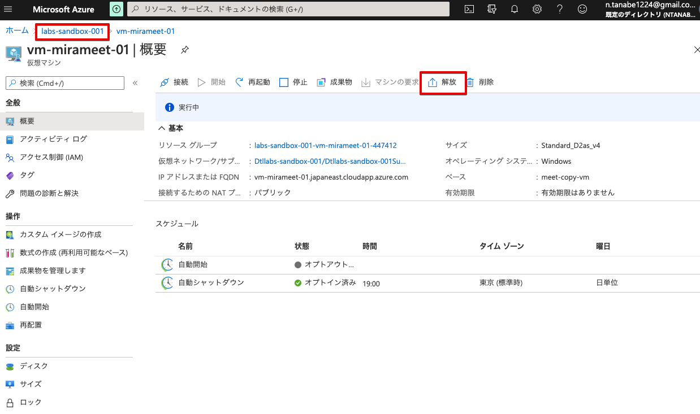
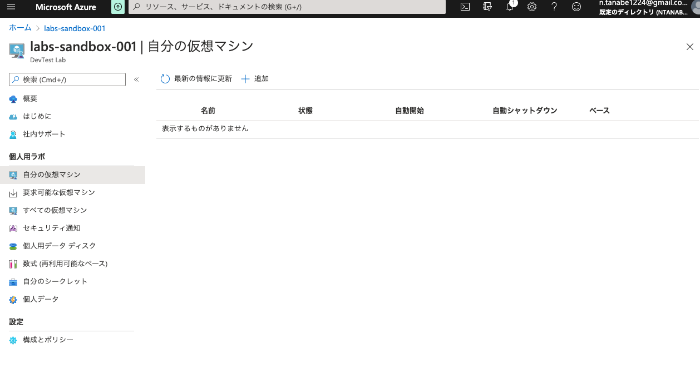
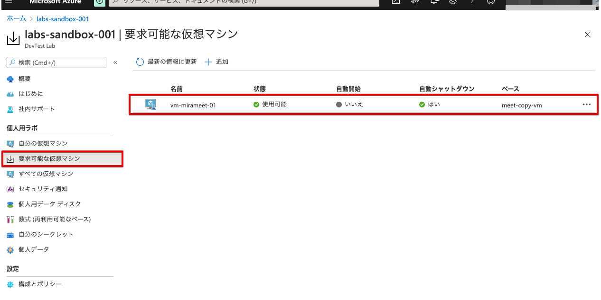
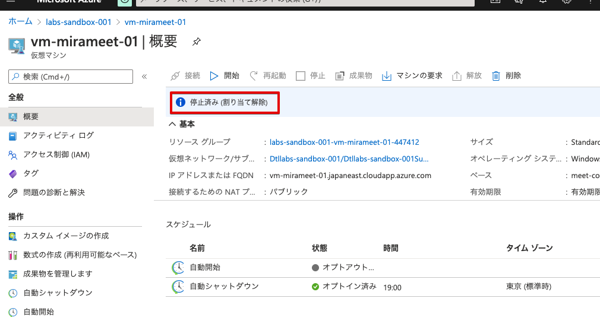

仮想マシンの概要にて開放をクリックします． クリックしたら左上のリンクでDevtest Labsに戻ります（もちろんサービスから検索でも可）．

上記の操作にて開放が終了すると自分の仮想マシンから移動し，開放されます． また，開放されるとVMは自動停止するので念の為，VMが停止しているかを確認します．

要求可能な仮想マシンに移動されたか確認します．要求前と同じ位置にVMが戻りました．

停止済み（割り当て解除）となっているのでOKです．
